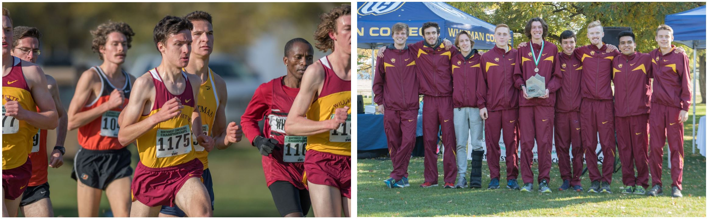
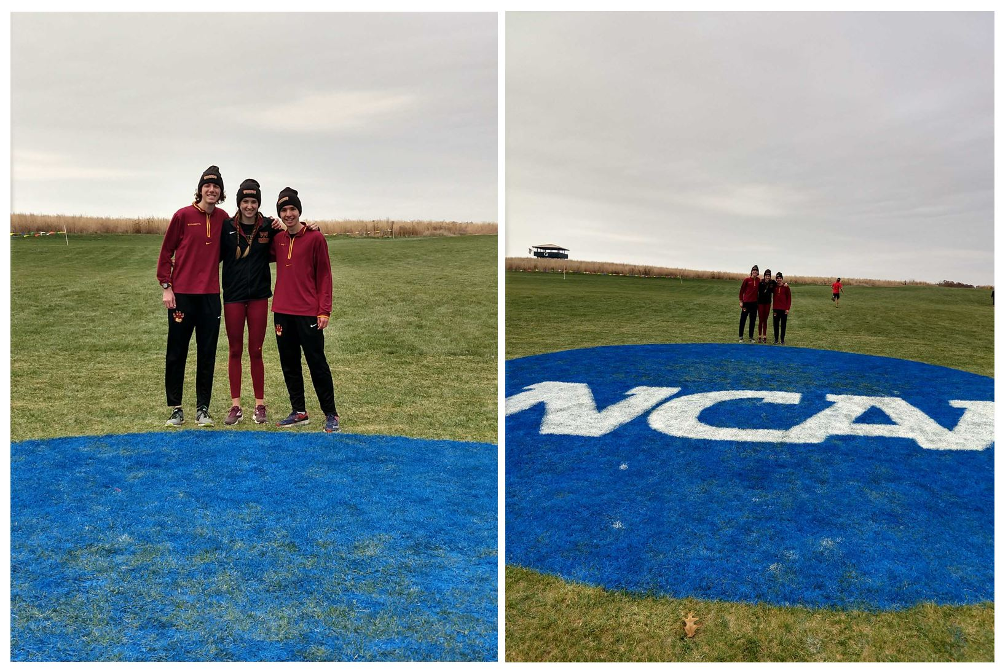
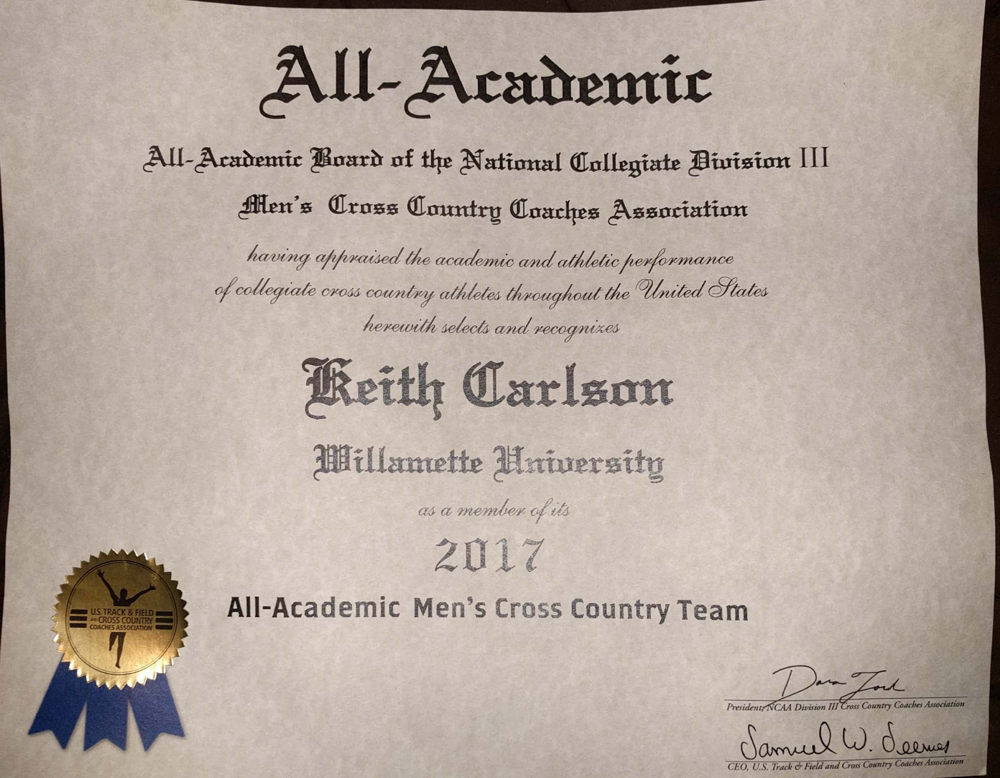

I had my best ever summer of training before the season and the hard work paid off!
Unlike the past two years I ran really strong on the postseason races this year. I
took 2nd place individually at the Northwest Conference XC Championships and led
our team to our 6th straight conference team title. Then at the Regional
Championships in Calaremont, CA I finished 15th individually and earned a
individual bid to the national meet.

Nationals was held at Principia College in Elsah, Illionis. It was a lot of fun, I
did not race as well as I would have liked finishing 188th but I got some
invaluable experience racing at this level.

I also recieved this at the end of the season because of my GPA and finish at the
national meet.